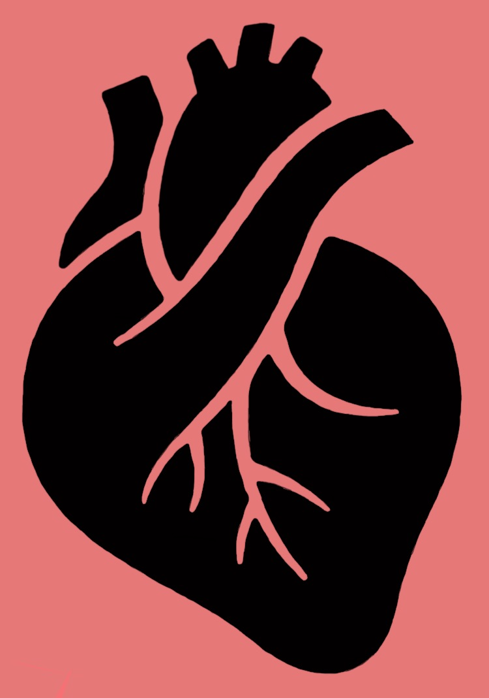

Ischemic heart disease refers to the weakening of the heart caused by decreased blood flow. This decrease in blood flow is generally the result of coronary artery disease, a condition that can be linked to smoking. This occurs when the coronary arteries narrow. As the heart weakens, it has to work harder to pump blood around the body. This can increase the risk of blood clots, heart failure, cardiac arrhythmia, and other issues. Consequently, ischemic heart disease is responsible for many deaths worldwide. It is considered the leading cause of death globally!
Select values to see the relative risks of dying from a IHD !
